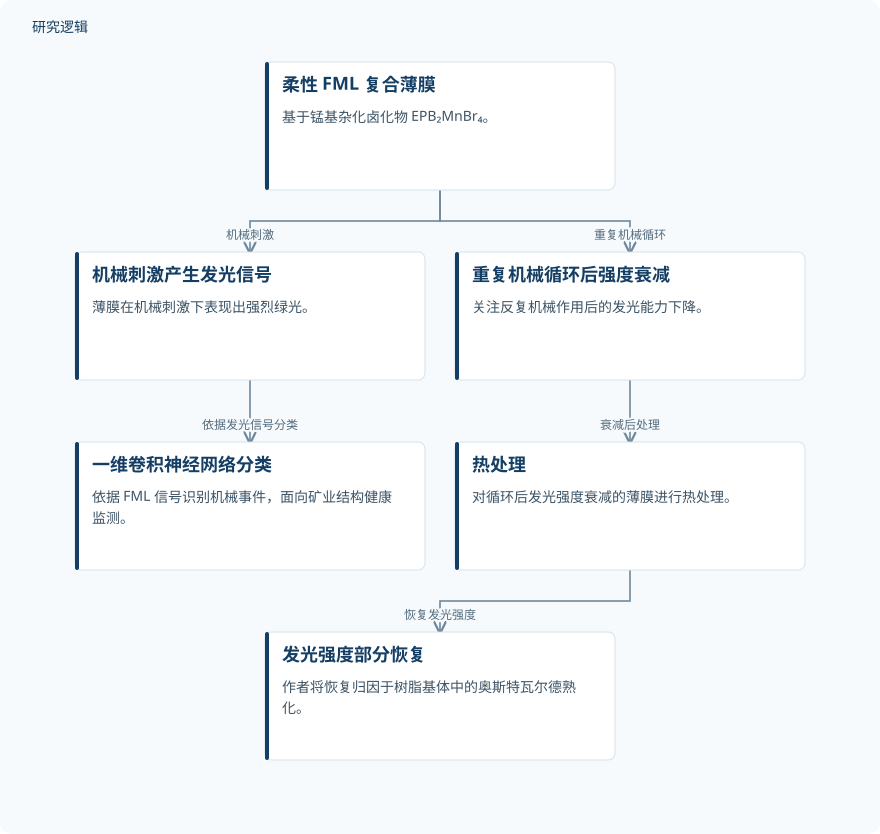

摘要解读
用于抗疲劳结构健康监测的锰基杂化卤化物热恢复型断裂力致发光
Thermally Recoverable Fracto‐Mechanoluminescence in Manganese‐Based Hybrid Halides for Fatigue‐Resistant Structural Health Monitoring
解读更新 2026-10-17 15:16 · 依据公开摘要整理，未核验全文细节
机械刺激下能够发光的材料，如何避免在反复使用后逐渐“失声”？这项研究将锰基杂化卤化物柔性薄膜的热恢复能力与发光信号分类相结合，为理解可恢复传感材料及其结构健康监测潜力提供了一个具体案例。
文章目录
发光能够感知受力，循环衰减却限制使用
断裂机械发光（FML）材料具有用于交互式光电系统的潜力，但摘要指出，这类材料通常会在长期循环应力下发生不可逆的疲劳衰减，限制实际应用。本文关注的不只是材料能否受力发光，还包括发光能力衰减后能否恢复，以及这些光信号能否用于识别机械事件。
柔性发光薄膜与信号分类相结合
研究设计了基于锰基杂化卤化物 EPB₂MnBr₄ 的柔性 FML 复合薄膜，其中 EPB 为乙基三苯基膦鎓。摘要明确介绍了对循环后衰减的发光强度进行热处理恢复，并开发一维卷积神经网络，依据 FML 信号对机械事件进行分类，面向矿业结构健康监测。
依据摘要整理的发光恢复与事件识别示意


概括柔性薄膜的发光信号分类与循环衰减后的热恢复两条关系，不代表论文原图，也不表示恢复后的分类性能已经验证。
下载 SVG图示关系说明
实线表示相邻阶段的信息流，虚线表示跨阶段联系或反馈。
柔性 FML 复合薄膜 → 机械刺激产生发光信号：机械刺激；机械刺激产生发光信号 → 一维卷积神经网络分类：依据发光信号分类；柔性 FML 复合薄膜 → 重复机械循环后强度衰减：重复机械循环；重复机械循环后强度衰减 → 热处理：衰减后处理；热处理 → 发光强度部分恢复：恢复发光强度
热处理恢复发光，神经网络识别机械事件
薄膜在机械刺激下表现出强烈绿光。经历重复机械循环、发光强度下降后，热处理可使其恢复至初始值的约 75.5%。作者将这一恢复归因于所用树脂基体中的奥斯特瓦尔德熟化。这里的“恢复”指发光强度恢复，不能直接等同于结构损伤修复或服役寿命恢复。
在信号识别方面，一维卷积神经网络对四类机械事件的分类准确率达到 98.75%。这一结果展示了机器学习识别 FML 信号模式的能力；摘要将结构健康监测表述为应用潜力，不能据此认定系统已经完成矿业现场长期部署验证。
恢复耐久性与分类泛化仍需更多信息
仅凭摘要，无法判断材料样本数量、机械循环次数、热处理温度与时长、可重复恢复次数，以及相较其他材料或处理方式的优势。奥斯特瓦尔德熟化归因所依赖的具体表征证据，也需要进一步阅读才能评估。
分类结果同样缺少事件类别定义、独立样本规模、训练测试划分、比较模型及外部验证范围等信息。因此，尚不能判断该准确率在不同工况下能否保持；这些是摘要未提供的信息，并不意味着论文没有开展相关工作。
阅读启发：区分材料恢复与监测可靠性
阅读启发：对智能运维与疲劳可靠性读者，值得进一步关注热恢复前后的信号变化是否影响分类表现，以及材料发光疲劳与被监测结构疲劳之间如何区分。这些问题直接关系到监测结果的解释，但当前摘要不足以回答，也不宜把传感材料的可恢复性直接推演为结构剩余寿命预测能力。
以上为本站阅读启发与建议，不是论文已验证的结论。